Zyvor AI Labs · Healthcare OS
The calm way to run a hospital.
Patients, wards, lab, pharmacy and billing in one secure place. Assistance that drafts, people who decide, and an audit trail you can verify. Private AI that only drafts. A named clinician reviews every suggestion. Full audit trail.
- Pilot-ready
- Self-hosted
- Private AI
- Draft only
- Named review required
- AI off by default
- Synthetic data only
- Not yet certified
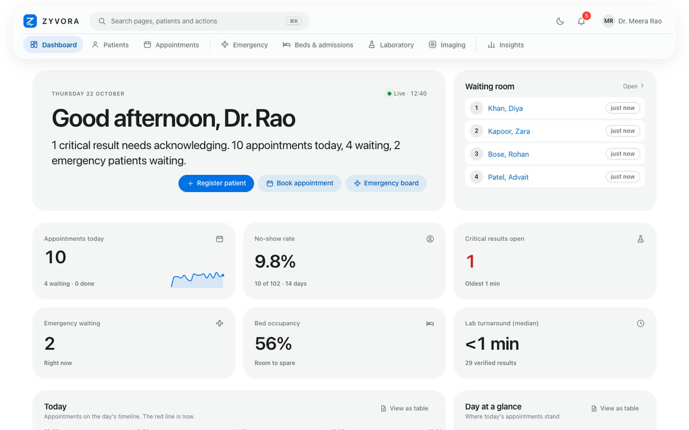
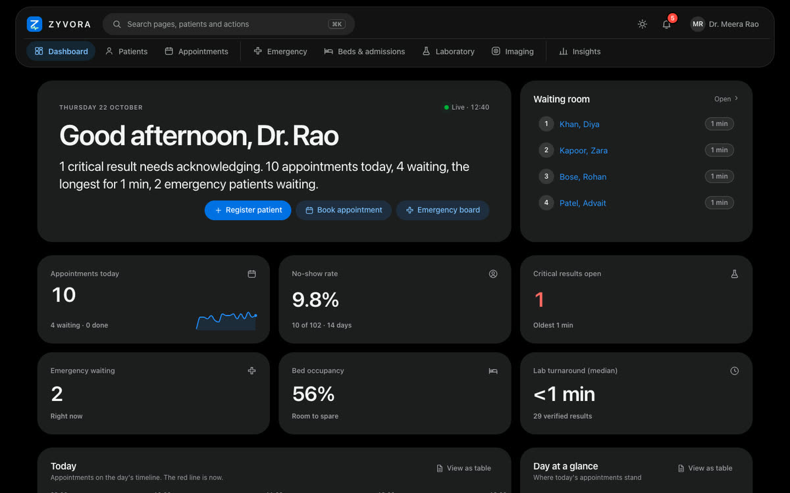
The dashboard above is a screenshot of the running app with synthetic data.
Try it
Install it on your own computer in five minutes.
One command, invented patients, nothing leaves your machine. Mac, Windows and Linux.


Counts come from the product's own documentation (openapi.json, the generated permission matrix, the metric catalogue and the validation report). Synthetic data only; not a certified medical product.
Built for the whole building
One calm place for everyone who touches a patient.
Clinicians
One workspace per encounter: notes with append-only revisions, vitals, prescribing, lab and imaging, and a drafting assistant that never acts on its own.
Administrators
Wards, beds and staff in one view; billing and insurance; insights over a fixed set of metrics; setup with a first-run checklist; an audit trail with chain verification.
Patients
A portal with their own appointments, medicines, released results and visit summaries, and video visits with strict who-and-when rules.
See it
Real screens, real data model.
Captured from the running application. Every patient and number shown is synthetic. The AI review view is an illustration with invented text, not a screenshot.
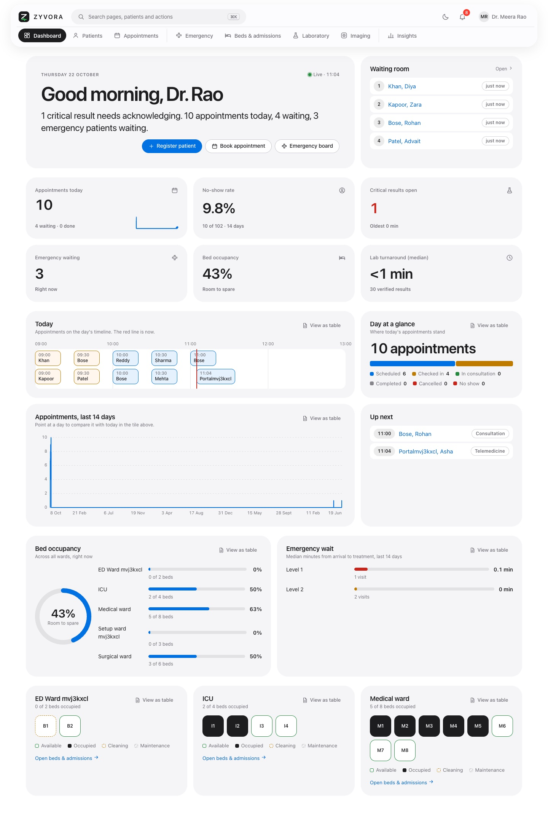
In motion
See how it feels to use.
Short recordings of the running app with synthetic data. Press play to watch; nothing moves until you do.
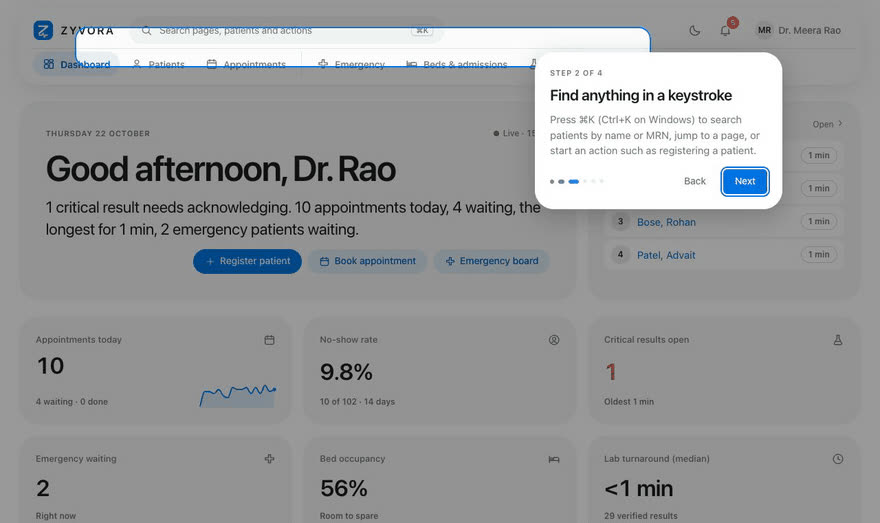
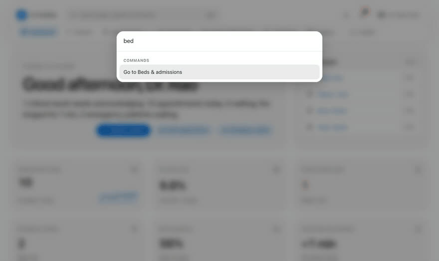
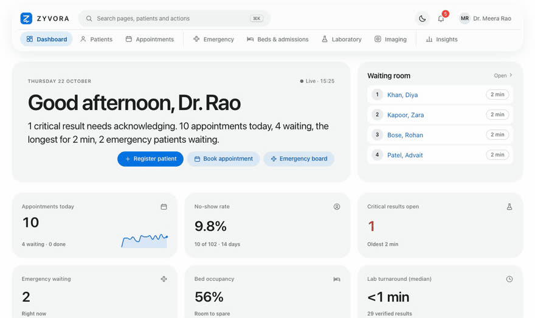
Modules
Everything a day on the ward needs.
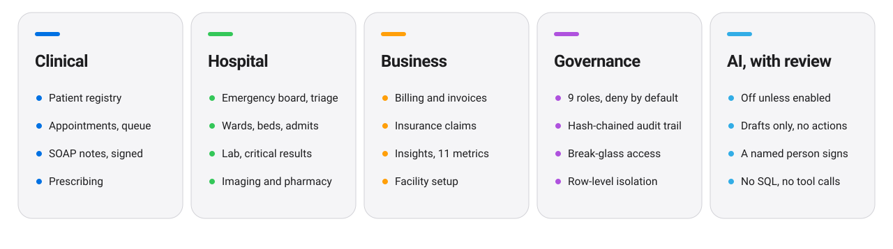
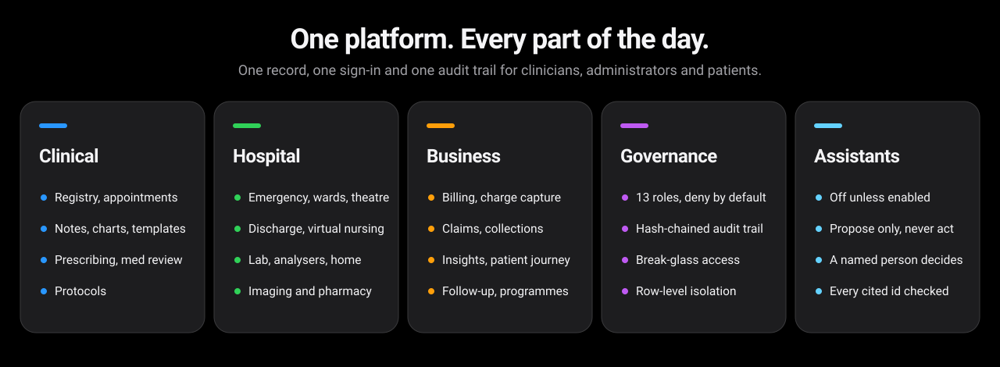
Emergency and wards
A tracking board with triage decision support (a trained classifier plus safety rules), admissions, transfers and discharge, and a bed map per ward.
Laboratory and imaging
Separate result entry and verification, critical alerts, result history drawn against reference ranges; imaging orders with a wrong-patient guard and radiologist-only reports.
Pharmacy and billing
An expiry-first stock ledger, dispensing and returns; exact money, tax rules held as data, idempotent payments, refunds, insurance claims, a list of events that never reached an invoice, and collections views.
Discharge, theatre and claims
Discharge plans whose milestones are tasks with owners, theatre scheduling the database will not let overlap, claim cases with checklists and frozen packets.
Follow-up and care programmes
Reminders, instructions and questionnaires using only wording a doctor approved, checked against the patient's consent; long-term programmes whose ranges the hospital itself sets, with a coach queue.
Diagnostics and documentation
Turnaround against the lab's own targets, home sample collection, analyser messages (simulator-tested), and note templates and chart forms (a tooth map, right and left eyes) that the hospital writes.
Security and privacy
Built to be trusted with patient records.
The database keeps tenants apart, every call is authorised, and everything that touches a record is on the audit trail.
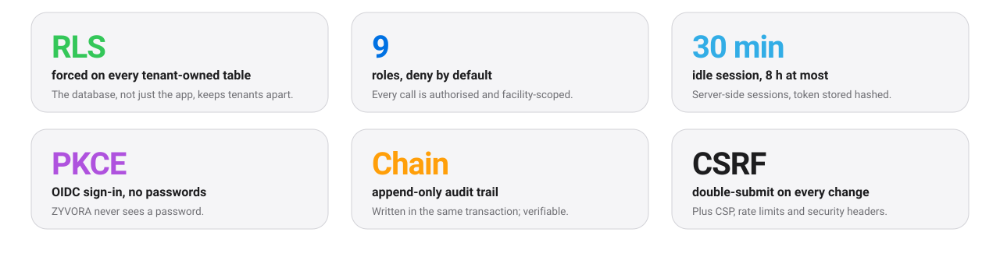
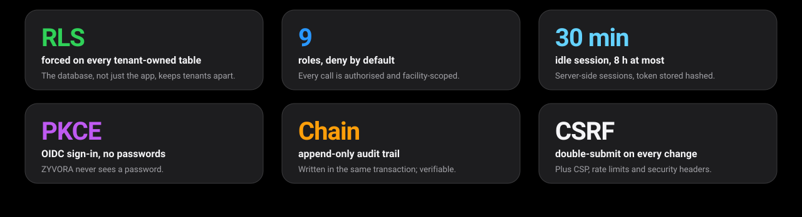
Not yet independently penetration-tested or certified. Read the honest limits Security in detail Security posture (PDF)
Assistants, with review
An assistant that proposes. A person who decides.
Off until you turn it on
AI is disabled per organisation by default and runs on a private OpenAI-compatible server you control. Identifiers are removed before anything is sent.
Drafts need a named reviewer
SOAP drafts, summaries, coding suggestions, document extraction, medicines read from a scan and conditions to consider (each must quote the note) are only ever drafts. A named clinician reviews each one, bound to their own note revision.
No actions, no generated SQL
Drafting assistants have no tools. Four propose-only assistants (discharge, claims, handover and reply drafts) can read only what the signed-in person may read, may cite only what a tool returned, and propose tasks that a person accepts or dismisses: none can send, order, sign or submit. Questions about the hospital run over a closed catalogue of eleven metrics.
Not clinically validated
No model here has been clinically validated. One live check against a small local model mis-filed an assessment under objective, which is why review is mandatory.
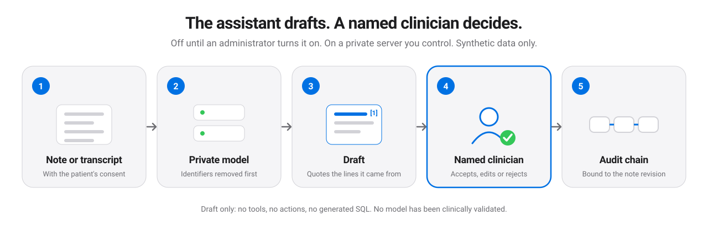
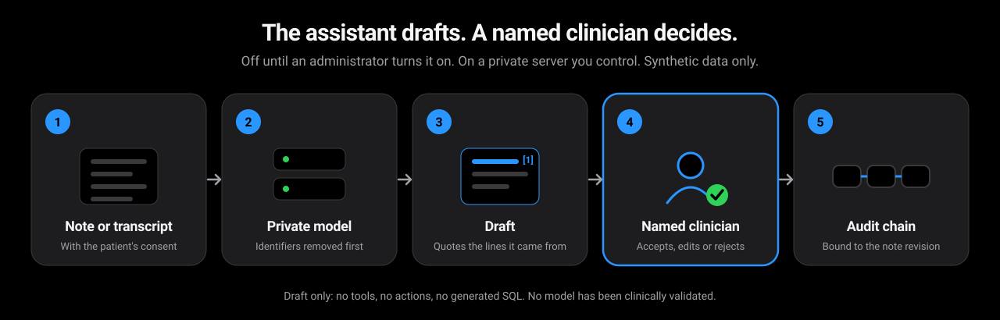
Questions worth asking any EHR vendor about AI
Here is how ZYVORA answers each, as stated in its own documentation. We make no claim about any other product.
| Question | ZYVORA | Ask any vendor |
|---|---|---|
| Is AI on by default? | Off by default; an administrator turns each assistant on per organisation. | Is it off until we enable it? |
| Where does it run? | On a private OpenAI-compatible server you control, after identifiers are removed. | Which server, and who operates it? |
| What can it do? | Draft or propose only. Nothing can send, order, sign or submit. | Can it queue or place orders? |
| Who reviews? | A named clinician, bound to their own note revision. | Is the reviewer named and tied to a revision? |
| Is it audited? | Append-only, hash-chained, written in the same transaction as the change. | Can we verify the audit trail ourselves? |
| Does it write SQL? | No. Questions run over a closed catalogue of eleven metrics. | Is any query generated by the model? |
Built for hospitals that run their own servers
Self-hosted, with AI on a private model server you control. Languages other than English and ABDM are not built yet. Not certified. Read the honest limits.
See a draft being reviewed.
The demo includes a stand-in assistant. Real AI is off by default.
Deploy
Run it your way.
The same two container images on Docker Compose, Kubernetes, or k3s with Keycloak sign-in and an Envoy edge.
Ask about deployment Deployment in detail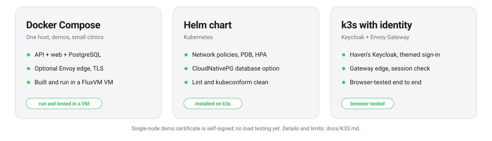
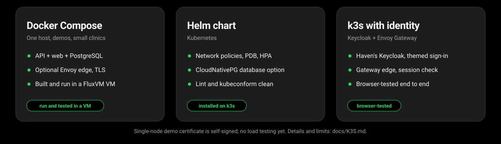


Honest limits
What ZYVORA is not, yet.
We would rather you hear it from us. Each line is stated in the product's own documentation.
| Area | Where it stands |
|---|---|
| Data | Built and tested with synthetic data only. |
| Certification | Not certified against HIPAA, GDPR, ISO 27001, SOC 2, IEC 62304, NABH/JCI or similar. A gap list is published. |
| Security review | No independent penetration test yet. The audit trail is tamper-evident, not tamper-proof against a database owner. |
| AI clinical validation | No model has been clinically validated. Review is mandatory. |
| Clinical safety | No clinical validation of any model. Drug-interaction and dose checks report unavailable where there is no drug database; they never say "passed". |
| Integrations | FHIR R4 is read-only. FluxVM has been verified live; the Nuvora wire contract against a real Nuvora process (its offline demo provider); Netra only against stand-ins. Lab analysers (ASTM and HL7) have been tried only with simulated instruments, never a real analyser. |
| Scale | No load testing yet. Browser tests run in Chrome only, and there has been no screen-reader testing. |
| Also not built yet | Automated backups, critical-result paging, e-prescription, a real payment gateway (payment links are a labelled simulator), WhatsApp (a labelled simulator), ABDM, patient self-booking, languages other than English, a native mobile app. |
Resources
Take it to your team.
One-page sheets for executives, security reviewers and IT.
Executive overview
What ZYVORA covers and why organisations choose it.
PDFSecurity and privacy posture
The controls we built and, plainly, what we have not done.
PDFArchitecture and deployment
How it fits together and the ways to run it.
PDFModule guide
What each module does.
PDFIntegration matrix
What connects, and what has actually been run.
PDFFor evaluators
Ask sales for the architecture PDF, the security gap list and private AI details.
Ask about private AI pilotsPricing
Plans to be completed
Pricing has not been decided. The tiers below are a layout only; no figure here is an offer.
Pilot
For a single clinic proving the fit.
- [ scope to be defined ]
- [ support level ]
Hospital
For a hospital running day to day.
- [ scope to be defined ]
- [ support level ]
Network
For several sites and custom integration.
- [ scope to be defined ]
- [ support level ]
To discuss a pilot: sales@zyvor.dev.
Customer stories
None yet. to be completed
ZYVORA has not been deployed with a customer. When it is, their story, in their words and with their numbers, goes here.
Questions
Straight answers.
Is ZYVORA a certified medical product?
No. It is pilot-ready software built and tested with synthetic data. It carries no regulatory certification and no clinical validation, and a published gap list says what is missing.
Does the AI make clinical decisions?
No. It is off by default, produces drafts only, has no tools and takes no actions. A named clinician must review a draft before it counts, and the review is tied to that clinician's own note revision. It runs on a private server you control, the audit trail is hash-chained and written in the same transaction, and questions about the hospital run over a closed catalogue of metrics with no generated SQL. No model has been clinically validated. How the AI works.
Can we run the AI on our own models or Nuvora?
The AI runs on a private OpenAI-compatible server you control. Nuvora, a self-hosted AI platform with that API, is the preferred back end, but its wire contract has been checked only against Nuvora's offline demo provider, not a live model. No model has been clinically validated and review is mandatory.
Where does our data live?
On infrastructure you run: PostgreSQL with row-level security per organisation, behind the Rust API. Optional AI runs on a private server you choose, after identifiers are removed.
How do people sign in?
Through your organisation's own identity provider with OpenID Connect and PKCE. ZYVORA never sees a password. The k3s deployment ships Keycloak (Haven's packaging) with a themed sign-in page.
Can we connect it to other systems?
There is a read-only FHIR R4 API (Patient, Encounter, Observation, AllergyIntolerance, MedicationRequest, Appointment, $everything) and a documented HTTP API. FHIR writes are on the roadmap.
What does it run on?
Docker Compose on a single host, a Helm chart for Kubernetes, or a k3s deployment with an Envoy Gateway edge. PostgreSQL 14 to 18.
Can I see the source or the docs?
The product source is private. Ask us what we can share with evaluators.
Ready for a pilot?
Tell us about your clinic or hospital. We will walk you through it with synthetic data first.